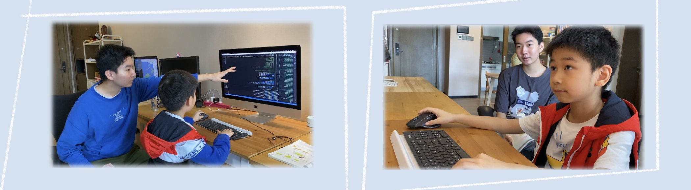

At the end of my second grade, my parents and I decided to explore a new learning approach—autonomous learning. The obvious benefit of this approach lies in its flexibility. Time, location, and content of learning all become flexible, allowing the pursuit of interests and activities according to one’s own ideas. In a sense, it can be regarded as a truly personalized form of education.
In the Internet era, learning resources and tools are more abundant than ever. Therefore, the most difficult part of independent learning is not actually the acquisition of knowledge but the need to establish strong self-leadership. This includes taking responsibility, being proactive and goal-oriented, asking questions, being willing to experiment, and learning from mistakes. When I was in school, everything was arranged by my teachers, but in autonomous learning, I had to make decisions on almost everything myself. Only then did I realize that making choices is not easy. It involves collecting information from various sources and frequently seeking assistance from others. Time management has also been challenging, often leading to cycles of planning, poor execution, and plan modification.
It took me about 2-3 years to slowly establish the habits and abilities to support autonomous learning. Although the journey was challenging, the learning efficiency was relatively high. I could consistently complete school courses well ahead of schedule, and the extra time was primarily used for:
https://felixspace.com/ contains my learning records before 9th grade. In short, I mainly focused on:
My brother Henry also became an autonomous learner at age 6. Combined with my experience in autonomous learning, we created the “Learn Elementary School Math with Coding” project.
To ease the university application process, I started attending an online high school (Laurel Springs) in 9th grade. Attending an online high school draws upon many skills I gained during autonomous learning, such as time management and being proactive. Currently, I am a high school student with interests in game design, computer science, digital media, education, and psychology.
For any questions or suggestions about “Learn Elementary School Math with Coding” or autonomous learning, feel free to contact me at: zhangxufei05@hotmail.com.
